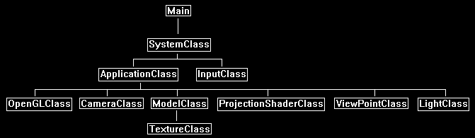

This tutorial will cover how to implement projected light maps in OpenGL 4.0 using GLSL and C++.
The code in this tutorial is based on the previous projective texturing tutorial.
Projected light maps are one of the best ways to reproduce complex scene lighting with just some simple 2D light map textures.
In the same way we have used projective texturing to render 2D textures onto 3D scenes we will use 2D light map textures and project them onto 3D scenes.
For this tutorial we will start with a basic 3D scene that is illuminated by a single point light:

Next, we will use a black and white texture that will represent the light we want to project onto the scene.
We will project it from the position of the point light.
The white areas in the texture are where the light will be added to the scene.
The black areas represent where there will only be ambient light.
The following texture is just the inverse of a sewer grate with a blur added.

Now when we project the light texture onto the scene, we get the following result:

Framework
For this tutorial we have added the LightClass from the previous tutorials back into the framework.

We will start the code section of the tutorial by looking at the modified projection shader.
Projection.vs
The projection shaders have been modified to handle projecting light maps and handle point lighting, since both are required to achieve the correct effect.
////////////////////////////////////////////////////////////////////////////////
// Filename: projection.vs
////////////////////////////////////////////////////////////////////////////////
#version 400
/////////////////////
// INPUT VARIABLES //
/////////////////////
in vec3 inputPosition;
in vec2 inputTexCoord;
in vec3 inputNormal;
//////////////////////
// OUTPUT VARIABLES //
//////////////////////
out vec2 texCoord;
We will require output normals for the point light calculations.
out vec3 normal;
out vec4 viewPosition;
The light position is newly added as an output variable to be sent to the pixel shader for point light calculations.
out vec3 lightPos;
///////////////////////
// UNIFORM VARIABLES //
///////////////////////
uniform mat4 worldMatrix;
uniform mat4 viewMatrix;
uniform mat4 projectionMatrix;
uniform mat4 viewMatrix2;
uniform mat4 projectionMatrix2;
We use point lights instead of directional lighting as it is more fitting for projecting light maps, and so we need an input for the position of the light.
This can also be considered closer to a spot light than a point light.
uniform vec3 lightPosition;
////////////////////////////////////////////////////////////////////////////////
// Vertex Shader
////////////////////////////////////////////////////////////////////////////////
void main(void)
{
vec4 worldPosition;
// Calculate the position of the vertex against the world, view, and projection matrices.
gl_Position = vec4(inputPosition, 1.0f) * worldMatrix;
gl_Position = gl_Position * viewMatrix;
gl_Position = gl_Position * projectionMatrix;
// Store the position of the vertice as viewed by the projection view point in a separate variable.
viewPosition = vec4(inputPosition, 1.0f) * worldMatrix;
viewPosition = viewPosition * viewMatrix2;
viewPosition = viewPosition * projectionMatrix2;
// Store the texture coordinates for the pixel shader.
texCoord = inputTexCoord;
We add the normal vector calculation for point lights.
// Calculate the normal vector against the world matrix only.
normal = inputNormal * mat3(worldMatrix);
// Normalize the normal vector.
normal = normalize(normal);
The point light calculations have also been added to the vertex shader.
// Calculate the position of the vertex in the world.
worldPosition = vec4(inputPosition, 1.0f) * worldMatrix;
// Determine the light position based on the position of the light and the position of the vertex in the world.
lightPos = lightPosition.xyz - worldPosition.xyz;
// Normalize the light position vector.
lightPos = normalize(lightPos);
}
Projection.ps
////////////////////////////////////////////////////////////////////////////////
// Filename: projection.ps
////////////////////////////////////////////////////////////////////////////////
#version 400
/////////////////////
// INPUT VARIABLES //
/////////////////////
We have a new light position and normal vector as input variables.
in vec2 texCoord;
in vec3 normal;
in vec4 viewPosition;
in vec3 lightPos;
//////////////////////
// OUTPUT VARIABLES //
//////////////////////
out vec4 outputColor;
///////////////////////
// UNIFORM VARIABLES //
///////////////////////
uniform sampler2D shaderTexture;
The projectionTexture is now the light map that will be projected onto the 3D scene.
uniform sampler2D projectionTexture;
We will require an ambient, diffuse, and brightness value for our point light calculations.
uniform vec4 ambientColor;
uniform vec4 diffuseColor;
uniform float brightness;
////////////////////////////////////////////////////////////////////////////////
// Pixel Shader
////////////////////////////////////////////////////////////////////////////////
void main(void)
{
float lightIntensity;
vec4 textureColor;
vec2 projectTexCoord;
vec4 projectionColor;
Calculate the point light and sample the color texture as normal.
// Calculate the amount of light on this pixel.
lightIntensity = clamp(dot(normal, lightPos), 0.0f, 1.0f);
if(lightIntensity > 0.0f)
{
// Determine the light color based on the diffuse color and the amount of light intensity.
outputColor = (diffuseColor * lightIntensity) * brightness;
}
// Sample the pixel color from the texture using the sampler at this texture coordinate location.
textureColor = texture(shaderTexture, texCoord);
Calculate the projected coordinates for projecting the light.
// Calculate the projected texture coordinates.
projectTexCoord.x = viewPosition.x / viewPosition.w / 2.0f + 0.5f;
projectTexCoord.y = viewPosition.y / viewPosition.w / 2.0f + 0.5f;
// Determine if the projected coordinates are in the 0 to 1 range. If it is then this pixel is inside the projected view port.
if((clamp(projectTexCoord.x, 0.0, 1.0) == projectTexCoord.x) && (clamp(projectTexCoord.y, 0.0, 1.0) == projectTexCoord.y))
{
// Sample the color value from the projection texture using the sampler at the projected texture coordinate location.
projectionColor = texture(projectionTexture, projectTexCoord);
If the pixel is inside the projection area where we are projecting the light map then we calculate the output color as the regular lighting and texturing multiplied by the light map value.
// Set the output color of this pixel to the projection texture overriding the regular color value.
outputColor = clamp((outputColor * projectionColor * textureColor) + (ambientColor * textureColor), 0.0f, 1.0f);
}
else
{
If the pixel is not inside the projection area where we are projecting the light map then the output value is just the ambient light combined with the color texture.
// Sample the pixel color from the texture using the sampler at this texture coordinate location.
outputColor = ambientColor * textureColor;
}
}
Projectionshaderclass.h
The ProjectionShaderClass is the same as the previous tutorial except that it has been modified to handle point lights.
////////////////////////////////////////////////////////////////////////////////
// Filename: projectionshaderclass.h
////////////////////////////////////////////////////////////////////////////////
#ifndef _PROJECTIONSHADERCLASS_H_
#define _PROJECTIONSHADERCLASS_H_
//////////////
// INCLUDES //
//////////////
#include <iostream>
using namespace std;
///////////////////////
// MY CLASS INCLUDES //
///////////////////////
#include "openglclass.h"
////////////////////////////////////////////////////////////////////////////////
// Class name: ProjectionShaderClass
////////////////////////////////////////////////////////////////////////////////
class ProjectionShaderClass
{
public:
ProjectionShaderClass();
ProjectionShaderClass(const ProjectionShaderClass&);
~ProjectionShaderClass();
bool Initialize(OpenGLClass*);
void Shutdown();
bool SetShaderParameters(float*, float*, float*, float*, float*, float*, float*, float*, float);
private:
bool InitializeShader(char*, char*);
void ShutdownShader();
char* LoadShaderSourceFile(char*);
void OutputShaderErrorMessage(unsigned int, char*);
void OutputLinkerErrorMessage(unsigned int);
private:
OpenGLClass* m_OpenGLPtr;
unsigned int m_vertexShader;
unsigned int m_fragmentShader;
unsigned int m_shaderProgram;
};
#endif
Projectionshaderclass.cpp
////////////////////////////////////////////////////////////////////////////////
// Filename: projectionshaderclass.cpp
////////////////////////////////////////////////////////////////////////////////
#include "projectionshaderclass.h"
ProjectionShaderClass::ProjectionShaderClass()
{
m_OpenGLPtr = 0;
}
ProjectionShaderClass::ProjectionShaderClass(const ProjectionShaderClass& other)
{
}
ProjectionShaderClass::~ProjectionShaderClass()
{
}
bool ProjectionShaderClass::Initialize(OpenGLClass* OpenGL)
{
char vsFilename[128];
char psFilename[128];
bool result;
// Store the pointer to the OpenGL object.
m_OpenGLPtr = OpenGL;
// Set the location and names of the shader files.
strcpy(vsFilename, "../Engine/projection.vs");
strcpy(psFilename, "../Engine/projection.ps");
// Initialize the vertex and pixel shaders.
result = InitializeShader(vsFilename, psFilename);
if(!result)
{
return false;
}
return true;
}
void ProjectionShaderClass::Shutdown()
{
// Shutdown the shader.
ShutdownShader();
// Release the pointer to the OpenGL object.
m_OpenGLPtr = 0;
return;
}
bool ProjectionShaderClass::InitializeShader(char* vsFilename, char* fsFilename)
{
const char* vertexShaderBuffer;
const char* fragmentShaderBuffer;
int status;
// Load the vertex shader source file into a text buffer.
vertexShaderBuffer = LoadShaderSourceFile(vsFilename);
if(!vertexShaderBuffer)
{
return false;
}
// Load the fragment shader source file into a text buffer.
fragmentShaderBuffer = LoadShaderSourceFile(fsFilename);
if(!fragmentShaderBuffer)
{
return false;
}
// Create a vertex and fragment shader object.
m_vertexShader = m_OpenGLPtr->glCreateShader(GL_VERTEX_SHADER);
m_fragmentShader = m_OpenGLPtr->glCreateShader(GL_FRAGMENT_SHADER);
// Copy the shader source code strings into the vertex and fragment shader objects.
m_OpenGLPtr->glShaderSource(m_vertexShader, 1, &vertexShaderBuffer, NULL);
m_OpenGLPtr->glShaderSource(m_fragmentShader, 1, &fragmentShaderBuffer, NULL);
// Release the vertex and fragment shader buffers.
delete [] vertexShaderBuffer;
vertexShaderBuffer = 0;
delete [] fragmentShaderBuffer;
fragmentShaderBuffer = 0;
// Compile the shaders.
m_OpenGLPtr->glCompileShader(m_vertexShader);
m_OpenGLPtr->glCompileShader(m_fragmentShader);
// Check to see if the vertex shader compiled successfully.
m_OpenGLPtr->glGetShaderiv(m_vertexShader, GL_COMPILE_STATUS, &status);
if(status != 1)
{
// If it did not compile then write the syntax error message out to a text file for review.
OutputShaderErrorMessage(m_vertexShader, vsFilename);
return false;
}
// Check to see if the fragment shader compiled successfully.
m_OpenGLPtr->glGetShaderiv(m_fragmentShader, GL_COMPILE_STATUS, &status);
if(status != 1)
{
// If it did not compile then write the syntax error message out to a text file for review.
OutputShaderErrorMessage(m_fragmentShader, fsFilename);
return false;
}
// Create a shader program object.
m_shaderProgram = m_OpenGLPtr->glCreateProgram();
// Attach the vertex and fragment shader to the program object.
m_OpenGLPtr->glAttachShader(m_shaderProgram, m_vertexShader);
m_OpenGLPtr->glAttachShader(m_shaderProgram, m_fragmentShader);
// Bind the shader input variables.
m_OpenGLPtr->glBindAttribLocation(m_shaderProgram, 0, "inputPosition");
m_OpenGLPtr->glBindAttribLocation(m_shaderProgram, 1, "inputTexCoord");
m_OpenGLPtr->glBindAttribLocation(m_shaderProgram, 2, "inputNormal");
// Link the shader program.
m_OpenGLPtr->glLinkProgram(m_shaderProgram);
// Check the status of the link.
m_OpenGLPtr->glGetProgramiv(m_shaderProgram, GL_LINK_STATUS, &status);
if(status != 1)
{
// If it did not link then write the syntax error message out to a text file for review.
OutputLinkerErrorMessage(m_shaderProgram);
return false;
}
return true;
}
void ProjectionShaderClass::ShutdownShader()
{
// Detach the vertex and fragment shaders from the program.
m_OpenGLPtr->glDetachShader(m_shaderProgram, m_vertexShader);
m_OpenGLPtr->glDetachShader(m_shaderProgram, m_fragmentShader);
// Delete the vertex and fragment shaders.
m_OpenGLPtr->glDeleteShader(m_vertexShader);
m_OpenGLPtr->glDeleteShader(m_fragmentShader);
// Delete the shader program.
m_OpenGLPtr->glDeleteProgram(m_shaderProgram);
return;
}
char* ProjectionShaderClass::LoadShaderSourceFile(char* filename)
{
FILE* filePtr;
char* buffer;
long fileSize, count;
int error;
// Open the shader file for reading in text modee.
filePtr = fopen(filename, "r");
if(filePtr == NULL)
{
return 0;
}
// Go to the end of the file and get the size of the file.
fseek(filePtr, 0, SEEK_END);
fileSize = ftell(filePtr);
// Initialize the buffer to read the shader source file into, adding 1 for an extra null terminator.
buffer = new char[fileSize + 1];
// Return the file pointer back to the beginning of the file.
fseek(filePtr, 0, SEEK_SET);
// Read the shader text file into the buffer.
count = fread(buffer, 1, fileSize, filePtr);
if(count != fileSize)
{
return 0;
}
// Close the file.
error = fclose(filePtr);
if(error != 0)
{
return 0;
}
// Null terminate the buffer.
buffer[fileSize] = '\0';
return buffer;
}
void ProjectionShaderClass::OutputShaderErrorMessage(unsigned int shaderId, char* shaderFilename)
{
long count;
int logSize, error;
char* infoLog;
FILE* filePtr;
// Get the size of the string containing the information log for the failed shader compilation message.
m_OpenGLPtr->glGetShaderiv(shaderId, GL_INFO_LOG_LENGTH, &logSize);
// Increment the size by one to handle also the null terminator.
logSize++;
// Create a char buffer to hold the info log.
infoLog = new char[logSize];
// Now retrieve the info log.
m_OpenGLPtr->glGetShaderInfoLog(shaderId, logSize, NULL, infoLog);
// Open a text file to write the error message to.
filePtr = fopen("shader-error.txt", "w");
if(filePtr == NULL)
{
cout << "Error opening shader error message output file." << endl;
return;
}
// Write out the error message.
count = fwrite(infoLog, sizeof(char), logSize, filePtr);
if(count != logSize)
{
cout << "Error writing shader error message output file." << endl;
return;
}
// Close the file.
error = fclose(filePtr);
if(error != 0)
{
cout << "Error closing shader error message output file." << endl;
return;
}
// Notify the user to check the text file for compile errors.
cout << "Error compiling shader. Check shader-error.txt for error message. Shader filename: " << shaderFilename << endl;
return;
}
void ProjectionShaderClass::OutputLinkerErrorMessage(unsigned int programId)
{
long count;
FILE* filePtr;
int logSize, error;
char* infoLog;
// Get the size of the string containing the information log for the failed shader compilation message.
m_OpenGLPtr->glGetProgramiv(programId, GL_INFO_LOG_LENGTH, &logSize);
// Increment the size by one to handle also the null terminator.
logSize++;
// Create a char buffer to hold the info log.
infoLog = new char[logSize];
// Now retrieve the info log.
m_OpenGLPtr->glGetProgramInfoLog(programId, logSize, NULL, infoLog);
// Open a file to write the error message to.
filePtr = fopen("linker-error.txt", "w");
if(filePtr == NULL)
{
cout << "Error opening linker error message output file." << endl;
return;
}
// Write out the error message.
count = fwrite(infoLog, sizeof(char), logSize, filePtr);
if(count != logSize)
{
cout << "Error writing linker error message output file." << endl;
return;
}
// Close the file.
error = fclose(filePtr);
if(error != 0)
{
cout << "Error closing linker error message output file." << endl;
return;
}
// Pop a message up on the screen to notify the user to check the text file for linker errors.
cout << "Error linking shader program. Check linker-error.txt for message." << endl;
return;
}
The SetShaderParameters function has been modified to accept as inputs the light diffuse color, ambient color, position, and brightness.
bool ProjectionShaderClass::SetShaderParameters(float* worldMatrix, float* viewMatrix, float* projectionMatrix, float* viewMatrix2, float* projectionMatrix2,
float* diffuseColor, float* ambientColor, float* lightPosition, float brightness)
{
float tpWorldMatrix[16], tpViewMatrix[16], tpProjectionMatrix[16], tpViewMatrix2[16], tpProjectionMatrix2[16];
int location;
// Transpose the matrices to prepare them for the shader.
m_OpenGLPtr->MatrixTranspose(tpWorldMatrix, worldMatrix);
m_OpenGLPtr->MatrixTranspose(tpViewMatrix, viewMatrix);
m_OpenGLPtr->MatrixTranspose(tpProjectionMatrix, projectionMatrix);
// Transpose the second view and projection matrices.
m_OpenGLPtr->MatrixTranspose(tpViewMatrix2, viewMatrix2);
m_OpenGLPtr->MatrixTranspose(tpProjectionMatrix2, projectionMatrix2);
// Install the shader program as part of the current rendering state.
m_OpenGLPtr->glUseProgram(m_shaderProgram);
// Set the world matrix in the vertex shader.
location = m_OpenGLPtr->glGetUniformLocation(m_shaderProgram, "worldMatrix");
if(location == -1)
{
cout << "World matrix not set." << endl;
}
m_OpenGLPtr->glUniformMatrix4fv(location, 1, false, tpWorldMatrix);
// Set the view matrix in the vertex shader.
location = m_OpenGLPtr->glGetUniformLocation(m_shaderProgram, "viewMatrix");
if(location == -1)
{
cout << "View matrix not set." << endl;
}
m_OpenGLPtr->glUniformMatrix4fv(location, 1, false, tpViewMatrix);
// Set the projection matrix in the vertex shader.
location = m_OpenGLPtr->glGetUniformLocation(m_shaderProgram, "projectionMatrix");
if(location == -1)
{
cout << "Projection matrix not set." << endl;
}
m_OpenGLPtr->glUniformMatrix4fv(location, 1, false, tpProjectionMatrix);
// Set the second view matrix in the vertex shader.
location = m_OpenGLPtr->glGetUniformLocation(m_shaderProgram, "viewMatrix2");
if(location == -1)
{
cout << "View matrix 2 not set." << endl;
}
m_OpenGLPtr->glUniformMatrix4fv(location, 1, false, tpViewMatrix2);
// Set the second projection matrix in the vertex shader.
location = m_OpenGLPtr->glGetUniformLocation(m_shaderProgram, "projectionMatrix2");
if(location == -1)
{
cout << "Projection matrix 2 not set." << endl;
}
m_OpenGLPtr->glUniformMatrix4fv(location, 1, false, tpProjectionMatrix2);
Set the point light's position.
// Set the light position in the vertex shader.
location = m_OpenGLPtr->glGetUniformLocation(m_shaderProgram, "lightPosition");
if(location == -1)
{
cout << "Light position not set." << endl;
}
m_OpenGLPtr->glUniform3fv(location, 1, lightPosition);
// Set the texture in the pixel shader to use the data from the first texture unit.
location = m_OpenGLPtr->glGetUniformLocation(m_shaderProgram, "shaderTexture");
if(location == -1)
{
cout << "Shader texture not set." << endl;
}
m_OpenGLPtr->glUniform1i(location, 0);
// Set the projection texture in the pixel shader to use the data from the second texture unit.
location = m_OpenGLPtr->glGetUniformLocation(m_shaderProgram, "projectionTexture");
if(location == -1)
{
cout << "Projection texture not set." << endl;
}
m_OpenGLPtr->glUniform1i(location, 1);
Set the light diffuse, ambient, and brightness.
// Set the diffuse light color in the pixel shader.
location = m_OpenGLPtr->glGetUniformLocation(m_shaderProgram, "diffuseColor");
if(location == -1)
{
cout << "Diffuse color not set." << endl;
}
m_OpenGLPtr->glUniform4fv(location, 1, diffuseColor);
// Set the ambient light in the pixel shader.
location = m_OpenGLPtr->glGetUniformLocation(m_shaderProgram, "ambientColor");
if(location == -1)
{
cout << "Ambient color not set." << endl;
}
m_OpenGLPtr->glUniform4fv(location, 1, ambientColor);
// Set the light brightness in the pixel shader.
location = m_OpenGLPtr->glGetUniformLocation(m_shaderProgram, "brightness");
if(location == -1)
{
cout << "Brightness not set." << endl;
}
m_OpenGLPtr->glUniform1f(location, brightness);
return true;
}
Applicationclass.h
We have added a light object for the point light.
////////////////////////////////////////////////////////////////////////////////
// Filename: applicationclass.h
////////////////////////////////////////////////////////////////////////////////
#ifndef _APPLICATIONCLASS_H_
#define _APPLICATIONCLASS_H_
/////////////
// GLOBALS //
/////////////
const bool FULL_SCREEN = false;
const bool VSYNC_ENABLED = true;
const float SCREEN_NEAR = 0.3f;
const float SCREEN_DEPTH = 1000.0f;
///////////////////////
// MY CLASS INCLUDES //
///////////////////////
#include "inputclass.h"
#include "openglclass.h"
#include "modelclass.h"
#include "cameraclass.h"
#include "projectionshaderclass.h"
#include "viewpointclass.h"
#include "lightclass.h"
////////////////////////////////////////////////////////////////////////////////
// Class Name: ApplicationClass
////////////////////////////////////////////////////////////////////////////////
class ApplicationClass
{
public:
ApplicationClass();
ApplicationClass(const ApplicationClass&);
~ApplicationClass();
bool Initialize(Display*, Window, int, int);
void Shutdown();
bool Frame(InputClass*);
private:
bool Render();
private:
OpenGLClass* m_OpenGL;
CameraClass* m_Camera;
ModelClass *m_GroundModel, *m_CubeModel;
ProjectionShaderClass* m_ProjectionShader;
TextureClass* m_ProjectionTexture;
ViewPointClass* m_ViewPoint;
LightClass* m_Light;
};
#endif
Applicationclass.cpp
////////////////////////////////////////////////////////////////////////////////
// Filename: applicationclass.cpp
////////////////////////////////////////////////////////////////////////////////
#include "applicationclass.h"
ApplicationClass::ApplicationClass()
{
m_OpenGL = 0;
m_Camera = 0;
m_GroundModel = 0;
m_CubeModel = 0;
m_ProjectionShader = 0;
m_ProjectionTexture = 0;
m_ViewPoint = 0;
m_Light = 0;
}
ApplicationClass::ApplicationClass(const ApplicationClass& other)
{
}
ApplicationClass::~ApplicationClass()
{
}
bool ApplicationClass::Initialize(Display* display, Window win, int screenWidth, int screenHeight)
{
char modelFilename[128], textureFilename[128];
bool result;
// Create and initialize the OpenGL object.
m_OpenGL = new OpenGLClass;
result = m_OpenGL->Initialize(display, win, screenWidth, screenHeight, SCREEN_NEAR, SCREEN_DEPTH, VSYNC_ENABLED);
if(!result)
{
cout << "Error: Could not initialize the OpenGL object." << endl;
return false;
}
// Create and initialize the camera object.
m_Camera = new CameraClass;
m_Camera->SetPosition(0.0f, 7.0f, -10.0f);
m_Camera->SetRotation(35.0f, 0.0f, 0.0f);
m_Camera->Render();
// Create and initialize the ground model object.
m_GroundModel = new ModelClass;
strcpy(modelFilename, "../Engine/data/plane01.txt");
strcpy(textureFilename, "../Engine/data/metal001.tga");
result = m_GroundModel->Initialize(m_OpenGL, modelFilename, textureFilename, false, NULL, false, NULL, false);
if(!result)
{
cout << "Error: Could not initialize the ground model object." << endl;
return false;
}
// Create and initialize the cube model object.
m_CubeModel = new ModelClass;
strcpy(modelFilename, "../Engine/data/cube.txt");
strcpy(textureFilename, "../Engine/data/stone01.tga");
result = m_CubeModel->Initialize(m_OpenGL, modelFilename, textureFilename, false, NULL, false, NULL, false);
if(!result)
{
cout << "Error: Could not initialize the cube model object." << endl;
return false;
}
// Create and initialize the projection shader object.
m_ProjectionShader = new ProjectionShaderClass;
result = m_ProjectionShader->Initialize(m_OpenGL);
if(!result)
{
cout << "Error: Could not initialize the projection shader object." << endl;
return false;
}
// Create and initialize the projection texture object.
m_ProjectionTexture = new TextureClass;
Set the projection texture to be the sewer grate light map texture.
strcpy(textureFilename, "../Engine/data/grate.tga");
result = m_ProjectionTexture->Initialize(m_OpenGL, textureFilename, false);
if(!result)
{
cout << "Error: Could not initialize the projection texture object." << endl;
return false;
}
// Create and initialize the view point object.
m_ViewPoint = new ViewPointClass;
m_ViewPoint->SetPosition(2.0f, 5.0f, -2.0f);
m_ViewPoint->SetLookAt(0.0f, 0.0f, 0.0f);
m_ViewPoint->SetProjectionParameters((3.14159265358979323846f / 2.0f), 1.0f, 0.1f, 100.0f);
m_ViewPoint->GenerateViewMatrix();
m_ViewPoint->GenerateProjectionMatrix();
Setup the parameters of the point light.
Set the position of the light to be the exact same as the projection view point location.
// Create and initialize the light object.
m_Light = new LightClass;
m_Light->SetAmbientLight(0.15f, 0.15f, 0.15f, 1.0f);
m_Light->SetDiffuseColor(1.0f, 1.0f, 1.0f, 1.0f);
m_Light->SetPosition(2.0f, 5.0f, -2.0f);
return true;
}
void ApplicationClass::Shutdown()
{
Release the new point light object in the Shutdown function.
// Release the light object.
if(m_Light)
{
delete m_Light;
m_Light = 0;
}
// Release the view point object.
if(m_ViewPoint)
{
delete m_ViewPoint;
m_ViewPoint = 0;
}
// Release the projection texture object.
if(m_ProjectionTexture)
{
m_ProjectionTexture->Shutdown();
delete m_ProjectionTexture;
m_ProjectionTexture = 0;
}
// Release the projection shader object.
if(m_ProjectionShader)
{
m_ProjectionShader->Shutdown();
delete m_ProjectionShader;
m_ProjectionShader = 0;
}
// Release the cube model object.
if(m_CubeModel)
{
m_CubeModel->Shutdown();
delete m_CubeModel;
m_CubeModel = 0;
}
// Release the ground model object.
if(m_GroundModel)
{
m_GroundModel->Shutdown();
delete m_GroundModel;
m_GroundModel = 0;
}
// Release the camera object.
if(m_Camera)
{
delete m_Camera;
m_Camera = 0;
}
// Release the OpenGL object.
if(m_OpenGL)
{
m_OpenGL->Shutdown();
delete m_OpenGL;
m_OpenGL = 0;
}
return;
}
bool ApplicationClass::Frame(InputClass* Input)
{
bool result;
// Check if the escape key has been pressed, if so quit.
if(Input->IsEscapePressed() == true)
{
return false;
}
// Render the graphics scene.
result = Render();
if(!result)
{
return false;
}
return true;
}
bool ApplicationClass::Render()
{
float worldMatrix[16], viewMatrix[16], projectionMatrix[16], viewMatrix2[16], projectionMatrix2[16];
float diffuseColor[4], ambientColor[4], lightPosition[3];
float brightness;
bool result;
// Clear the buffers to begin the scene.
m_OpenGL->BeginScene(0.0f, 0.0f, 0.0f, 1.0f);
// Get the world, view, and projection matrices from the opengl and camera objects.
m_OpenGL->GetWorldMatrix(worldMatrix);
m_Camera->GetViewMatrix(viewMatrix);
m_OpenGL->GetProjectionMatrix(projectionMatrix);
// Get the secondary view and projection matrices from the view point object.
m_ViewPoint->GetViewMatrix(viewMatrix2);
m_ViewPoint->GetProjectionMatrix(projectionMatrix2);
Get the light data for the shader.
// Get the light properties.
m_Light->GetDiffuseColor(diffuseColor);
m_Light->GetAmbientLight(ambientColor);
m_Light->GetPosition(lightPosition);
brightness = 1.5f;
// Setup the translation for the ground model.
m_OpenGL->MatrixTranslation(worldMatrix, 0.0f, 1.0f, 0.0f);
Pass in the additional light data when rendering the cube and the ground models.
// Set the projection shader as the current shader program and set the parameters that it will use for rendering.
result = m_ProjectionShader->SetShaderParameters(worldMatrix, viewMatrix, projectionMatrix, viewMatrix2, projectionMatrix2,
diffuseColor, ambientColor, lightPosition, brightness);
if(!result)
{
return false;
}
// Set the projection texture in texture unit 1.
m_ProjectionTexture->SetTexture(m_OpenGL, 1);
// Render the model.
m_GroundModel->SetTexture1(0);
m_GroundModel->Render();
// Setup the translation for the cube model.
m_OpenGL->MatrixTranslation(worldMatrix, 0.0f, 2.0f, 0.0f);
// Set the projection shader as the current shader program and set the parameters that it will use for rendering.
result = m_ProjectionShader->SetShaderParameters(worldMatrix, viewMatrix, projectionMatrix, viewMatrix2, projectionMatrix2,
diffuseColor, ambientColor, lightPosition, brightness);
if(!result)
{
return false;
}
// Set the projection texture in texture unit 1.
m_ProjectionTexture->SetTexture(m_OpenGL, 1);
// Render the model.
m_CubeModel->SetTexture1(0);
m_CubeModel->Render();
// Present the rendered scene to the screen.
m_OpenGL->EndScene();
return true;
}
Summary
We can now project 2D light maps onto 3D scenes allowing us to add complex lighting with just a very simple rendering technique.
To Do Exercises
1. Recompile and run the program. You should see a 2D projected light map being rendered on a 3D scene. Press escape to quit.
2. Set the cube to spin to see the effect of the lighting on it.
3. Change the light map texture.
4. Change the location of the point light and the projection view point.
5. Modify the view point projection parameters to shape the light differently.
6. Set the light map to be a spotlight texture. Then set the projection view point and point light to be the same as the camera. You now have a flash light effect.
Source Code
Source Code and Data Files: gl4linuxtut40_src.tar.gz